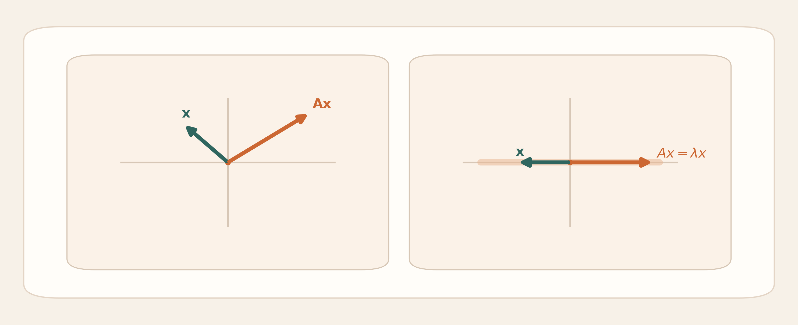

Reading Guide
?대뼸寃??쎌쑝硫?醫뗫굹
吏湲덉쿂????숈썝 硫댁젒??以鍮꾪븯???④퀎?먯꽌??"?뺤쓽瑜??대졃?뗭씠 ?덈떎"? "硫댁젒?먯꽌 ?뺥솗??留먰븷 ???덈떎" ?ъ씠??媛꾧꺽???쎈땲?? ?뱁엳 ?좏삎??섎뒗 ?⑹뼱媛 鍮꾩듂?섍쾶 ?앷꺼?? 癒몃┸?띿뿉?쒕뒗 ?꾨뒗 寃?媛숈븘???낆쑝濡?爰쇰궡???쒓컙 怨좎쑀媛믨낵 怨좎쑀踰≫꽣媛 ?욎씠嫄곕굹, ?媛곹솕 議곌굔怨?rank瑜??섎せ ?곌껐?섍굅??/strong>, SVD? PCA媛 ???⑹뼱由щ줈 萸됯컻吏????/strong>???먯＜ ?앷퉩?덈떎.
洹몃옒?????섏씠吏??癒쇱? 媛쒕뀗??湲멸쾶 ?ㅻ챸?섍퀬, ??洹?媛쒕뀗??以묒슂?쒖?? ?대뵒???룰컝由щ뒗吏瑜??④퍡 吏싳뒿?덈떎. 洹??ㅼ뿉 媛숈? ?댁슜??硫댁젒??吏㏃? ?듬??쇰줈 ?ㅼ떆 ?뺤텞???먯뿀?듬땲?? 湲???쎈떎媛 以묎컙以묎컙 ?섏삤???묒? ?꾩떇? 臾몄옣????좏븯???붿빟???꾨땲?? ?먮쫫??遺숈옟??二쇰뒗 蹂댁“ ?μ튂?쇨퀬 ?앷컖?섎㈃ ?⑸땲??
Eigen Concepts
怨좎쑀媛믨낵 怨좎쑀踰≫꽣??臾댁뾿?멸?
?됰젹??踰≫꽣???묒슜?섎㈃ 蹂댄넻? 諛⑺뼢怨??ш린媛 ?④퍡 諛붾앸땲?? ?곕━??蹂댄넻 ???ъ떎留??뚭퀬 吏?섍?吏留? ?좏삎??섏뿉??以묒슂??寃껋? 紐⑤뱺 踰≫꽣媛 ?묎컳??蹂?섎뒗 寃껋씠 ?꾨땲?쇰뒗 ?먯엯?덈떎. ?대뼡 ?밸퀎??踰≫꽣?ㅼ? 蹂?섏쓣 嫄곗튇 ?ㅼ뿉???먮옒? 媛숈? 吏곸꽑 ?꾩뿉 ?⑥뒿?덈떎. ?꾩쟾??媛숈? 諛⑺뼢???섎룄 ?덇퀬, 諛섎? 諛⑺뼢?쇰줈 ?ㅼ쭛???섎룄 ?덉?留? ?곸뼱??洹?踰≫꽣媛 ?대（????吏곸꽑 ?덉뿉?쒕뒗 踰쀬뼱?섏? ?딆뒿?덈떎. ??踰≫꽣媛 怨좎쑀踰≫꽣?닿퀬, 洹몃븣 ?쇰쭏???섏뼱?섍굅?? 以꾩뼱?쒕뒗吏瑜??섑??대뒗 ?ㅼ뭡?쇨? 怨좎쑀媛?/strong>?낅땲??

?ш린??以묒슂??寃껋? "諛⑺뼢????諛붾먮떎"???쒗쁽蹂대떎 "媛숈? 吏곸꽑 ?꾩뿉 ?⑤뒗?????쒗쁽?????뺥솗?섎떎???먯엯?덈떎. 硫댁젒?먯꽌 ??李⑥씠瑜??뺥솗??留먰빐二쇰㈃ 媛쒕뀗???붽린???щ엺???꾨땲???댄빐???щ엺泥섎읆 ?ㅻ┰?덈떎. 怨좎쑀媛믪씠 ?묒닔?대㈃ 媛숈? 諛⑺뼢?쇰줈 ?섏뼱?섍굅??以꾩뼱?쒕뒗 寃껋씠怨? ?뚯닔?대㈃ 諛섎? 諛⑺뼢?쇰줈 ?ㅼ쭛?덉?留??ъ쟾?? 媛숈? span ?덉뿉 ?덉뒿?덈떎. 洹몃옒??怨좎쑀媛믨낵 怨좎쑀踰≫꽣???됰젹??怨듦컙???대뼸寃?蹂?뺤떆?ㅻ뒗吏 ?쎌뼱?대뒗 媛??湲곕낯?곸씤 ?꾧뎄?낅땲??
吏곴??곸쑝濡쒕뒗 ?됰젹??怨듦컙??李뚭렇?щ쑉由щ뒗 湲곌퀎?쇨퀬 蹂????덉뒿?덈떎. ?遺遺꾩쓽 踰≫꽣????湲곌퀎瑜?吏?섎㈃ 諛⑺뼢??爰얠씠怨? 湲몄씠???щ씪吏묐땲?? 洹몃윴??怨좎쑀踰≫꽣??洹?湲곌퀎瑜??듦낵?대룄 ?먭린 異뺤쓣 ?껋? ?딅뒗 諛⑺뼢?낅땲?? 怨좎쑀媛믪? 洹?異뺤쓣 ?곕씪 ?쇰쭏???뺣??섍굅??異뺤냼?섎뒗吏瑜??뚮젮二쇰뒗 媛믪엯?덈떎. 諛붾줈 ???뚮Ц??怨좎쑀媛믨낵 怨좎쑀踰≫꽣??蹂듭옟???좏삎蹂?섏쓣 媛???⑥닚???뺥깭濡??댄빐?섍쾶 ?댁＜???댁뇿?쇨퀬 留먰븷 ???덉뒿?덈떎.
怨좎쑀踰≫꽣??"?좎??섎뒗 異??닿퀬, 怨좎쑀媛믪? "洹?異?諛⑺뼢??諛곗쑉"?낅땲??
Diagonalization
?媛곹솕????以묒슂?섍퀬, ?몄젣 媛?ν븳媛
?媛곹솕???됰젹??怨좎쑀踰≫꽣 湲곗??쇰줈 ?ㅼ떆 諛붾씪蹂대뒗 怨쇱젙?대씪怨??앷컖?섎㈃ ?댄빐媛 ?쎌뒿?덈떎. ?먮옒 醫뚰몴怨꾩뿉?쒕뒗 蹂듭옟?섍쾶 ?쏀? 蹂댁씠??蹂?섎룄, ?곸젅??怨좎쑀踰≫꽣 湲곗?濡?諛붽퓭??蹂대㈃ 媛?異뺤씠 ?쒕줈 媛꾩꽠?섏? ?딄퀬 ?낅┰?곸쑝濡??ㅼ??쇰쭔 諛붾뚮뒗 ?⑥닚??紐⑥뒿?쇰줈 ?쒗쁽?????덉뒿?덈떎. 利??媛곹솕??怨꾩궛 湲곗닠?대씪湲곕낫?? "??蹂?섏쓣 異??⑥쐞濡?遺꾨━?댁꽌 蹂????덈뒗媛"?쇰뒗 吏덈Ц???????듭엯?덈떎.
 ?媛곹솕 媛??議곌굔? rank? 吏곸젒 愿?⑥씠 ?놁뒿?덈떎. ??遺遺꾩? 硫댁젒?먯꽌 援됱옣???먯＜ ?붾뱾由щ뒗 吏?먯엯?덈떎.
?뺤궗媛??됰젹???媛곹솕 媛?ν븯?ㅻ㈃ ?좏삎?낅┰??怨좎쑀踰≫꽣媛 n媛?議댁옱?댁빞 ?⑸땲?? 怨좎쑀媛믪씠 紐⑤몢 ?쒕줈 ?ㅻⅤ硫? ?먮룞?쇰줈 ??議곌굔??留뚯”?섎?濡??媛곹솕媛 媛?ν빀?덈떎. ?섏?留?怨좎쑀媛믪씠 以묐났?섍린 ?쒖옉?섎㈃ ?댁빞湲곌? 議곌툑 誘몃쵖?댁쭛?덈떎.
?대븣???뱀꽦諛⑹젙?앹뿉??媛숈? 怨좎쑀媛믪씠 紐?踰?諛섎났?섎뒗吏瑜??섑??대뒗 ??섏쟻 以묐났?꾩?,
?ㅼ젣濡??낅┰?곸씤 怨좎쑀踰≫꽣媛 紐?媛??섏삤?붿?瑜??섑??대뒗 湲고븯??以묐났?꾨? 鍮꾧탳?댁빞 ?⑸땲??
以묎렐????踰??섏솕?ㅺ퀬 ?댁꽌 諛섎뱶??怨좎쑀踰≫꽣媛 ??媛??섏삤??寃껋? ?꾨땲怨? ?ㅼ젣濡쒕룄 ??媛쒓? ?섏????媛곹솕媛 媛?ν빀?덈떎.
?媛곹솕 媛??議곌굔? rank? 吏곸젒 愿?⑥씠 ?놁뒿?덈떎. ??遺遺꾩? 硫댁젒?먯꽌 援됱옣???먯＜ ?붾뱾由щ뒗 吏?먯엯?덈떎.
?뺤궗媛??됰젹???媛곹솕 媛?ν븯?ㅻ㈃ ?좏삎?낅┰??怨좎쑀踰≫꽣媛 n媛?議댁옱?댁빞 ?⑸땲?? 怨좎쑀媛믪씠 紐⑤몢 ?쒕줈 ?ㅻⅤ硫? ?먮룞?쇰줈 ??議곌굔??留뚯”?섎?濡??媛곹솕媛 媛?ν빀?덈떎. ?섏?留?怨좎쑀媛믪씠 以묐났?섍린 ?쒖옉?섎㈃ ?댁빞湲곌? 議곌툑 誘몃쵖?댁쭛?덈떎.
?대븣???뱀꽦諛⑹젙?앹뿉??媛숈? 怨좎쑀媛믪씠 紐?踰?諛섎났?섎뒗吏瑜??섑??대뒗 ??섏쟻 以묐났?꾩?,
?ㅼ젣濡??낅┰?곸씤 怨좎쑀踰≫꽣媛 紐?媛??섏삤?붿?瑜??섑??대뒗 湲고븯??以묐났?꾨? 鍮꾧탳?댁빞 ?⑸땲??
以묎렐????踰??섏솕?ㅺ퀬 ?댁꽌 諛섎뱶??怨좎쑀踰≫꽣媛 ??媛??섏삤??寃껋? ?꾨땲怨? ?ㅼ젣濡쒕룄 ??媛쒓? ?섏????媛곹솕媛 媛?ν빀?덈떎.
?媛곹솕媛 以묒슂???댁쑀??泥レ㎏濡?怨꾩궛???ъ썙吏湲??뚮Ц?낅땲?? ?됰젹??嫄곕벊?쒓낢?대굹 諛섎났 蹂?섏? ?먮옒 苑?蹂듭옟?쒕뜲, ?媛곹솕媛 ?섎㈃ 寃곌뎅 媛?異?諛⑺뼢???ㅼ뭡??嫄곕벊?쒓낢 臾몄젣濡?諛붾앸땲?? ?섏㎏濡??쒖뒪?쒖쓽 ?κ린 嫄곕룞???쎈뒗 ???좊━?⑸땲?? 諛섎났?곸쑝濡??곸슜?섎뒗 ?좏삎 ?쒖뒪?쒖뿉?쒕뒗 ?대뼡 諛⑺뼢? 而ㅼ?怨? ?대뼡 諛⑺뼢? 以꾩뼱?ㅺ퀬, ?대뼡 諛⑺뼢? ?좎??⑸땲?? 洹??깆쭏??怨좎쑀媛??ш린留?蹂닿퀬 鍮좊Ⅴ寃??먮떒?????덇린 ?뚮Ц?? ?숈쟻 ?쒖뒪?? ?쒖뼱, 媛뺥솕?숈뒿 媛숈? 遺꾩빞?먯꽌 ?먯＜ ?곗엯?덈떎.
SVD And PCA
SVD? PCA???대뼸寃??곌껐?섎뒗媛
SVD??紐⑤뱺 ?됰젹???뚯쟾, ?ㅼ??? ?뚯쟾?????④퀎濡??댄빐?섍쾶 ?댁＜??遺꾪빐?낅땲?? ???댁꽍? ?쒓컖?곸쑝濡?諛쏆븘?ㅼ씠硫??⑥뵮 ?명빀?덈떎. 癒쇱? ?낅젰 怨듦컙??異뺤쓣 蹂닿린 醫뗭? 諛⑺뼢?쇰줈 ?뚮━怨? 洹??ㅼ쓬 媛?異?諛⑺뼢?쇰줈 ?쇰쭏??以묒슂?쒖????곕씪 ?섏씠嫄곕굹 以꾩씠怨? 留덉?留됱쑝濡?異쒕젰 怨듦컙??留욊쾶 ?ㅼ떆 諛⑺뼢???뺣젹?섎뒗 寃껋엯?덈떎. 洹몃옒??SVD??怨듭떇???몄슦??寃껊낫??"蹂듭옟??蹂?섎룄 寃곌뎅 異뺤쓣 留욎텣 ???ш린瑜?議곗젅?섎뒗 怨쇱젙?쇰줈 蹂????덈떎"??媛먭컖???〓뒗 寃껋씠 以묒슂?⑸땲??

???섎굹 ?먯＜ ?룰컝由щ뒗 遺遺꾩? ?뱀씠媛믪엯?덈떎. ?뱀씠媛믪? 怨좎쑀媛믪쓽 ?쒓낢???꾨땲?? ATA??怨좎쑀媛믪뿉 ?쒓낢洹쇱쓣 痍⑦븳 媛?/strong>?낅땲?? 留먯? ?⑥닚?섏?留?硫댁젒?먯꽌???ш린???먯＜ 瑗ъ엯?덈떎. ?뱁엳 "?쒓렇留덇? 怨좎쑀媛믪쓽 ?쒓낢"?대씪怨?留먰븯硫?諛붾줈 媛먯젏 ?ъ씤?멸? ?섍린 ?쎌뒿?덈떎. ?곕씪??SVD瑜??ㅻ챸???뚮뒗 U? V媛 媛곴컖 異쒕젰 怨듦컙怨??낅젰 怨듦컙???뺢퇋吏곴탳湲곗?瑜?二쇨퀬, 誇媛 媛?異?諛⑺뼢??以묒슂?꾨? ?섑??몃떎怨??뺣━?섎뒗 寃껋씠 ?덉쟾?⑸땲??
PCA??李⑥썝 異뺤냼 臾몄젣?먯꽌 ?깆옣?⑸땲?? ?곗씠??李⑥썝???덈Т ?믪쑝硫?怨꾩궛??臾닿쾪怨? ?쒓컖?붾룄 ?대졄怨? 遺덊븘?뷀븳 ?≪쓬???섏뼱?⑸땲?? 洹몃옒???곗씠?곗쓽 以묒슂??援ъ“??理쒕????④린硫댁꽌 李⑥썝??以꾩씠怨??띠뼱吏묐땲?? PCA???듭떖 ?꾩씠?붿뼱???곗씠?곌? 媛??留롮씠 ?쇱쭊 諛⑺뼢??癒쇱? 李얜뒗 寃?/strong>?낅땲?? 怨듬텇???됰젹??怨좎쑀踰≫꽣媛 諛붾줈 洹?諛⑺뼢?ㅼ씠怨? 怨좎쑀媛믪? 媛?諛⑺뼢??遺꾩궛?됱쓣 ?삵빀?덈떎. 利?怨좎쑀媛믪씠 ??諛⑺뼢?쇱닔濡??곗씠?곗쓽 以묒슂??援ъ“瑜?留롮씠 ?닿퀬 ?덈떎怨?蹂????덉뒿?덈떎.

?ш린??SVD? PCA媛 ?곌껐?⑸땲?? ?곗씠???됰젹??吏곸젒 SVD瑜??곸슜?대룄, 寃곌뎅 PCA?먯꽌 李얘퀬 ?띠? 二쇱슂 諛⑺뼢 ?뺣낫瑜??살쓣 ???덉뒿?덈떎. 洹몃옒???ㅼ쟾?먯꽌??PCA瑜?怨듬텇???됰젹??怨좎쑀媛?遺꾪빐濡??ㅻ챸?섍린???섍퀬, ?곗씠???됰젹??SVD濡??ㅻ챸?섍린???⑸땲?? 硫댁젒?먯꽌??"PCA??媛??留롮씠 ?쇱쭊 諛⑺뼢??李얜뒗 李⑥썝 異뺤냼 諛⑸쾿?닿퀬, ?곗씠???됰젹??SVD瑜??곸슜?섎㈃ 洹?諛⑺뼢 ?뺣낫瑜??살쓣 ???덈떎" ?뺣룄濡??곌껐?댁＜硫?異⑸텇??醫뗭? ?듭씠 ?⑸땲??
SVD??"紐⑤뱺 ?됰젹???⑥닚???吏곸엫?쇰줈 遺꾪빐?섎뒗 諛⑸쾿"?닿퀬, PCA??"洹몄쨷 ?곗씠?곌? 媛??留롮씠 ?쇱쭊 諛⑺뼢留??④린??諛⑸쾿"?낅땲??
Oral Answers
硫댁젒?먯꽌 吏㏐쾶 ?듯븯??踰꾩쟾
1. 怨좎쑀媛믨낵 怨좎쑀踰≫꽣媛 臾댁뾿?멸???
?됰젹??踰≫꽣???묒슜?섎㈃ 蹂댄넻 諛⑺뼢怨??ш린媛 紐⑤몢 諛붾앸땲?? 洹몃윴???대뼡 ?밸퀎??踰≫꽣??蹂???꾩뿉??媛숈? 吏곸꽑 ?꾩뿉 ?⑥뒿?덈떎. 洹?踰≫꽣媛 怨좎쑀踰≫꽣?닿퀬, ?쇰쭏???섏뼱?섍굅??以꾩뼱?쒕뒗吏瑜??섑??대뒗 ?ㅼ뭡?쇨? 怨좎쑀媛믪엯?덈떎. 吏곴??곸쑝濡쒕뒗 蹂듭옟???좏삎蹂???띿뿉?쒕룄 ?좎??섎뒗 異뺤쓣 李얜뒗 媛쒕뀗?대씪怨?蹂????덉뒿?덈떎.
2. ?媛곹솕 媛??議곌굔怨??媛곹솕???좎슜?깆? 臾댁뾿?멸???
?媛곹솕???됰젹??怨좎쑀踰≫꽣 湲곗??쇰줈 諛붽퓭?????⑥닚???媛곹뻾???뺥깭濡?蹂대뒗 寃껋엯?덈떎. 媛??議곌굔? ?좏삎?낅┰??怨좎쑀踰≫꽣媛 n媛?議댁옱?섎뒗 寃?/strong>?낅땲?? ?媛곹솕媛 ?좎슜???댁쑀???됰젹??嫄곕벊?쒓낢 怨꾩궛???ъ썙吏怨? 諛섎났?섎뒗 ?쒖뒪?쒖쓽 ?κ린 嫄곕룞?대굹 ?덉젙?깆쓣 怨좎쑀媛믪쑝濡?鍮좊Ⅴ寃??뚯븙?????덇린 ?뚮Ц?낅땲??
3. SVD? PCA???대뼸寃??ㅻ챸?섎㈃ 醫뗭쓣源뚯슂?
SVD??紐⑤뱺 ?됰젹???뚯쟾, ?ㅼ??? ?뚯쟾?????④퀎濡?遺꾪빐?섎뒗 諛⑸쾿?낅땲?? PCA???곗씠?곌? 媛??留롮씠 ?쇱쭊 諛⑺뼢??李얠븘 李⑥썝??以꾩씠??諛⑸쾿?낅땲?? ?곗씠???됰젹??SVD瑜??곸슜?섎㈃ 洹?二쇱꽦遺?諛⑺뼢???살쓣 ???덇린 ?뚮Ц?? ??媛쒕뀗? ?ㅼ쟾?먯꽌 ?먯뿰?ㅻ읇寃??곌껐?⑸땲??
4. ??怨좎쑀媛믨낵 怨좎쑀踰≫꽣媛 以묒슂?쒓???
蹂듭옟???좏삎蹂?섏쓣 媛???⑥닚???뺥깭濡??댄빐?섍쾶 ?댁＜湲??뚮Ц?낅땲?? 怨꾩궛???⑥닚?뷀빐二쇨퀬, ?쒖뒪?쒖쓽 ?κ린 嫄곕룞???뚯븙?섍쾶 ?댁＜硫? PCA 媛숈? 李⑥썝 異뺤냼??異붿쿇 ?쒖뒪??媛숈? ?묒슜?먮룄 吏곸젒 ?곌껐?⑸땲??
Follow-up Notes
瑗щ━吏덈Ц?먯꽌 ?먯＜ ?섏삤???ъ씤??/h2>
硫댁젒?먯꽌???뺤쓽瑜?留먰븳 ??諛붾줈 瑗щ━吏덈Ц???ㅼ뼱?ㅻ뒗 寃쎌슦媛 留롮뒿?덈떎. ?덈? ?ㅼ뼱 "怨좎쑀媛믪씠 ?뚯닔硫?諛⑺뼢????諛붾뚮뒗 嫄닿???" 媛숈? 吏덈Ц?먮뒗, 諛⑺뼢???꾩쟾??洹몃?濡쒕씪???쒗쁽蹂대떎??媛숈? 吏곸꽑 ?꾩뿉 ?⑤뒗?ㅺ퀬 留먰븯??寃껋씠 ???뺥솗?섎떎怨??듯븯硫??⑸땲?? ??"?媛곹솕 議곌굔????rank媛 ?꾨땲????吏덈Ц???섏삤硫? rank???낅┰?곸씤 ?댁씠???됱쓽 媛쒖닔?닿퀬, ?媛곹솕???낅┰?곸씤 怨좎쑀踰≫꽣瑜?n媛??뺣낫?????덈뒓?먭? ?듭떖?대씪怨?援щ텇?댁＜硫?醫뗭뒿?덈떎.
"??섏쟻 以묐났?꾩? 湲고븯??以묐났?꾨? ?쎄쾶 留먰빐蹂대씪"??吏덈Ц???먯＜ ?섏샃?덈떎. ?대븣????섏쟻 以묐났?꾨뒗 ?앹뿉??諛섎났?섎뒗 ?잛닔?닿퀬, 湲고븯??以묐났?꾨뒗 ?ㅼ젣濡??섏삤???낅┰ 怨좎쑀踰≫꽣??媛쒖닔?쇨퀬 留먰븯硫?異⑸텇?⑸땲?? 洹몃━怨??섏씠 留욎븘???媛곹솕媛 媛?ν븯?ㅺ퀬 ?댁뼱二쇰㈃ 醫뗭뒿?덈떎. SVD????댁꽌??"?????ㅼ쟾?곸씤媛"瑜?臾쇱쓣 ???덈뒗?? 紐⑤뱺 ?뺥깭???됰젹???곸슜 媛?ν븯怨??ㅼ젣 ?곗씠?곕뒗 吏곸궗媛??됰젹??留롪린 ?뚮Ц?대씪怨??듯븯硫??먯뿰?ㅻ읇?듬땲??
Mistakes
吏湲??뱁엳 議곗떖?댁빞 ???ㅼ닔
泥レ㎏, 怨좎쑀媛믨낵 怨좎쑀踰≫꽣瑜???臾몄옣 ?덉뿉???욎뼱 留먰븯吏 ?딅뒗 寃?/strong>??以묒슂?⑸땲?? 怨좎쑀踰≫꽣??踰≫꽣?닿퀬, 怨좎쑀媛믪? ?ㅼ뭡?쇱엯?덈떎. ?섏㎏, "諛⑺뼢??諛붾뚯? ?딅뒗?????쒗쁽???덈Т ?쎄쾶 ?곗? ?딅뒗 寃껋씠 醫뗭뒿?덈떎. ?뚯쓽 怨좎쑀媛믪씠 ?덉쓣 ?뚮뒗 諛섏쟾??媛?ν븯誘濡? 媛숈? 吏곸꽑 ?꾩뿉 ?⑤뒗?ㅺ퀬 ?쒗쁽?섎뒗 ?몄씠 ???뺥솗?⑸땲?? ?뗭㎏, ?媛곹솕 議곌굔??rank? ?곌껐?섎뒗 ?ㅼ닔??諛섎났?댁꽌 留됱븘???⑸땲?? 留덉?留됱쑝濡??뱀씠媛믪쓣 怨좎쑀媛믪쓽 ?쒓낢?대씪怨?留먰븯吏 ?딅룄濡?/strong> 二쇱쓽?댁빞 ?⑸땲?? ?뺥솗?덈뒗 ATA??怨좎쑀媛믪쓽 ?쒓낢洹쇱엯?덈떎.